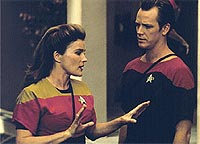
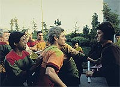
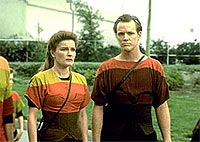
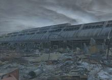
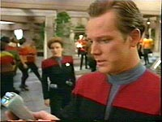

|
MANCHETE
DO EPISÓDIO
História
consegue driblar enrolação e se
firma como das melhores da
temporada
Episódio
anterior | Próximo
episódio
Sinopse:
Data Estelar: desconhecida.
 Durante
a exploração de um planeta que recentemente sofreu uma catástrofe
global que eliminou toda a sua população, Janeway e Paris são
separados do seu grupo avançado e de algum modo se encontram no
mesmo local, mas algumas horas antes do cataclisma que consumiu toda
a civilização local.
Suas tentativas de retornar para seu próprio tempo os levam ao
centro de um protesto da população do planeta contra uma usina de
energia polárica, que pode ter sido a causa da destruição.
 No
início, a capitã proíbe Paris de alertar o povo da catástrofe
que estava por vir, alegando que a Primeira Diretriz deveria ser
cumprida, mas ela descobre que sua própria presença pode ter
causado o desastre. Então, ela decide deixar de lado a diretriz
principal da Frota Estelar, com o objetivo de evitar a catástrofe.
Ela acaba descobrindo que o
desastre foi causado por uma tentativa de resgate feita pela tripulação
da Voyager. Conseguindo evitar o sucesso da tentativa, ela salva o
planeta e elimina da existência todos os eventos que ocorreram após
a chegada da Voyager àquele mundo.
Comentários:
 "Time
and Again" consegue driblar o problema crônico de Voyager
--o excesso de termos técnicos sem sentido para explicar a história--
e resiste como um dos melhores episódios da primeira temporada.
Não que ele não possua o excesso de tecnobaboseira comum à
maioria absoluta dos episódios da série, mas o segredo aqui é que
a "forçada de barra" fica ofuscada pelo brilhantismo do
enredo.
Além de ser uma aventura interessante, com um final surpreendente,
o episódio toca em uma questão contemporânea também atual. É óbvia
a analogia das usinas de energia polárica do planeta alienígena
com as atuais instalações nucleares da Terra. Até um grupo de
revoltados membros de um "Greenpeace" extraterrestre marca
sua presença!
 Essa
história mostra a ênfase imposta pelos produtores no início da série
em tratar de questões contemporâneas. No piloto, "Caretaker",
aborda-se o desastre ambiental e a falta de água. Em "Time
and Again", a inspiração é a produção de energia em
detrimento da segurança.
Outro recurso utilizado no episódio que tem resultados
interessantes é o famoso "reset": ao final, descobrimos
que tudo se trata de uma linha temporal alternativa que foi excluída
da existência. Nada do que vimos realmente aconteceu.
Essa técnica já apareceu em
grandes episódios, notadamente em "Yesterday's Enterprise",
de A Nova Geração, e "Year of Hell", um
episódio duplo do quarto ano de Voyager. Mas trata-se de um
risco calculado --muitos resets podem acabar tornando fúteis as
histórias. Fica fácil escrever qualquer coisa se no fim tudo o que
se precisa para resolver o enredo é fazer com que nada tivesse
acontecido.
 Tom
Paris tem nesse episódio a chance de desfilar um pouco de seu
carisma, como um bom contraponto para a capitã Janeway, que mostra
total seriedade durante a crise. E Kes começa a se mostrar como a
Deanna Troi de Voyager --a personagem sensitiva que dá dicas de
como prosseguir quando ninguém mais tem idéia do que está
acontecendo. Caminho perigoso para desenvolver em um personagem.
Citações:
Doutor - "Seems I've
found myself on the voyage of the damned."
("Parece que eu acabei caindo na viagem dos
condenados.")
Trivia:
 "'Time and Again' teve uma
premissa fascinante", disse Jeri Taylor, co-produtora de Voyager,"e
também deu a Paris e Janeway sequências que permitiram que os
personagens dessem mais um passo em seu relacionamento. Também foi
possível apresentar ao público alguns dos poderes mentais
emergentes de Kes. Ela ainda não sabe de quanto seu maravilhoso cérebro
é capaz. Porém, é claro que, ao final da história, como nada do
que vimos realmente aconteceu, ela ainda não foi capaz de perceber
nada disso, mas logo, logo ela terá momentos bem interessantes e
será plenamente consciente disso."
"'Time and Again' teve uma
premissa fascinante", disse Jeri Taylor, co-produtora de Voyager,"e
também deu a Paris e Janeway sequências que permitiram que os
personagens dessem mais um passo em seu relacionamento. Também foi
possível apresentar ao público alguns dos poderes mentais
emergentes de Kes. Ela ainda não sabe de quanto seu maravilhoso cérebro
é capaz. Porém, é claro que, ao final da história, como nada do
que vimos realmente aconteceu, ela ainda não foi capaz de perceber
nada disso, mas logo, logo ela terá momentos bem interessantes e
será plenamente consciente disso."
Ficha
técnica:
História de David Kemper
Roteiro de David Kemper e Michael Piller
Dirigido por Les Landau
Exibido em 30/01/1995
Produção: 004
Elenco:
Kate Mulgrew como
Kathryn Janeway
Robert Beltran como Chakotay
Roxann Biggs-Dawson como B'Elanna Torres
Robert Duncan McNeill como Tom Paris
Jennifer Lien como Kes
Ethan Phillips como Neelix
Robert Picardo como Doutor
Tim Russ como Tuvok
Garrett Wang como Harry Kim
Elenco convidado:
Brady Bluhm
como Latika
Ryan McDonald como atendente da loja
Joel Polis como Terla
Jerry Spicer como um guarda
Nicholas Surovy como Makull
Steve Vaught como um oficial
Episódio
anterior | Próximo
episódio
|